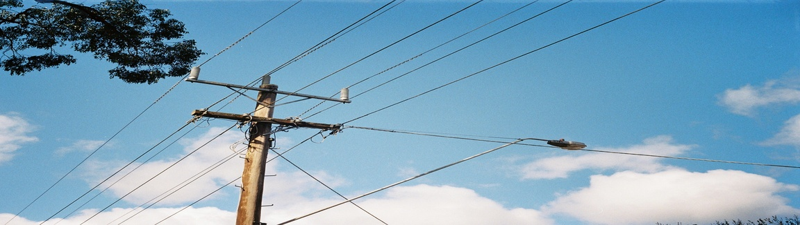

Power Outages
Photo Credit: Power lines pole, street light, blue sky with clouds by Matthew Paul Argall via Wikimedia
{kind=link}
Article from Climate Nexus (https://climatenexus.org/climate-issues/climate-change-power-grid-blackouts/)
Climate change is fueling extreme heat, droughts, wildfires, and hurricanes, which are overtaxing America’s outdated power grid. In a May 2022 report, North American Electric Reliability Corporation (NERC), a regulating authority that monitors the nation’s electrical infrastructure, warned that extreme temperatures, ongoing drought, and supply chain issues could strain the power grid in vast regions across the country. More than 90% of power outages result from failures in electricity distribution systems (weather-related events that damage poles and wires). The growing rate of record-breaking climate events threaten our outdated power grid’s ability to keep the lights on. Fossil fuels are both a root cause and exacerbating influence on these blackout events. The extraction and burning of oil, gas, and coal are the primary drivers of climate change, while outdated fossil infrastructure accompanied by wild market volatility have made these fuel sources expensive and unreliable. The 2018 National Climate Assessment warned of more frequent and longer-lasting power outages, which are slated to only get worse as climate-fueled events become more prevalent. This results in a tremendous human toll and $25 billion to $70 billion in economic damage annually. The good news: Renewable energy such as wind, solar, and battery storage continue to come online at a steady pace. These cheap and clean power sources are meeting increasingly larger shares of regional grid needs. And they are already “bailing out” utilities during record heat and skyrocketing power demand. Renewables plus storage, coupled with policies and investment in modernizing the grid and building out more transmission, are key to strengthening America’s power system.
Bad-faith actors have falsely claimed that renewable energy sources are to blame for past blackouts and potential blackout events this summer. This disinformation is fueled largely by profit-driven private utilities, the fossil fuel industry, and their backers in politics and media. Even before the summer officially started, right-wing editorial boards and outlets began a campaign of deception foisting blame for predicted summer blackouts on “the green energy transition.” This is part of a fossil fuel industry and utility playbook to avert attention from their own failings (and often skyrocketing earnings off disasters) while attempting to delay the transition to clean energy. Analysis from Friends of the Earth found that right-wing outlets and fossil fuel-funded interests have exploited social media to spread disinformation. This was true during the week-long blackouts in Texas following Winter Storm Uri. While Gov. Greg Abbott and others falsely blamed “frozen wind turbines,” the blackouts were found to have resulted primarily from a failure of gas infrastructure and power plants that were not adequately weatherized. An analysis of rolling blackouts in California in 2020 determined poor planning by utilities combined with a climate change-induced extreme heat event pushed electricity demand to exceed supply. Meanwhile, fossil fuel companies have raked in obscene profits during the height of disasters. Even though the lights went out for a week in Texas during Winter Storm Uri, pipeline operators and gas companies saw an $11 billion windfall. An executive at gas driller Comstock Resources bragged of “hitting the jackpot” as a result of the disaster.